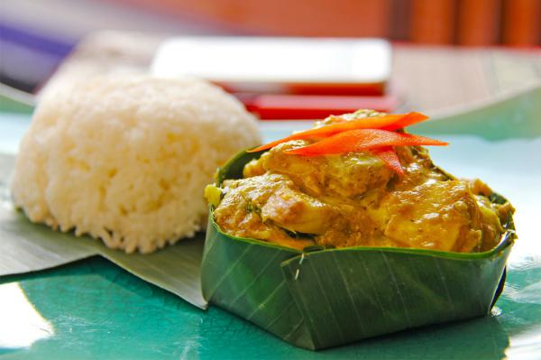
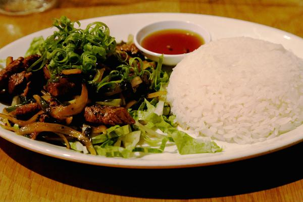
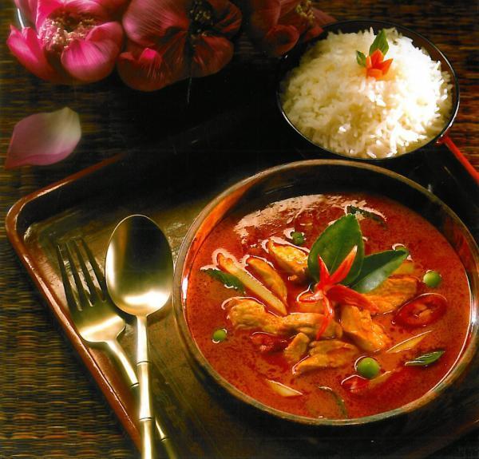
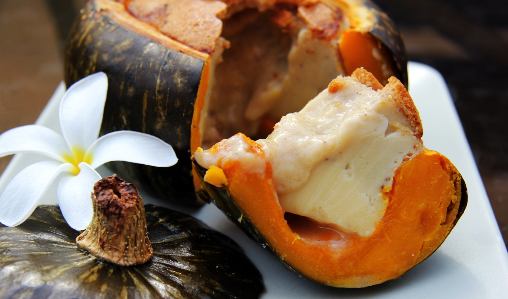

____
Традиционная еда
Говяжий Лок Лак — Это блюдо так же можно назвать постоянным в рационе жителей Камбоджи. Несмотря на то, что Лок Лак впервые начали готовить во Вьетнаме, со временем рецепт «перекочевал» и в соседние страны, вспомнить, когда это блюдо стали готовить кхмеры почти невозможно, так давно это было.

Рыба амок — кхмерский вариант приготовления этого азиатского рыбного блюда отличает добавление слок нгор, местной травы, придающий слегка горьковатый вкус рыбе. Это рыбный мусс с кокосовым молоком и криен, вид кхмерской пасты-карри, сделанной из лемонграсса, корня куркумы, чеснока, лука-шалот, калгана и корня имбиря или китайского имбиря.

Кхмерский карри — Тем, кто бывал в Таиланде и пробовал местное карри, будет интересно сравнить его с кхмерским вариантом. В него так же добавляют кокосовое молоко, но без перца чили. Обычно кхмерским карри дополняют говяжье мясо, курятину или рыбу, нередко его подают и вместе с овощами.

Ном Бан Чок — По этим замысловатым названием прячется не что иное, как кхмерская лапша. Любят ее здесь поедать на завтрак. В состав Ном Бан Чок входит растертая рисовая лапша, покрытая сверху рыбным соусом карри. Нередко для более насыщенного вкуса в блюдо добавляют лемонграсс, корень куркумы, и кафир-лайм (подвид цитрусов).

Санкхья лапов — Санкхья лапов, а точнее тыквенный заварной крем поражает любителей десертов не только своими вкусовыми качествами, но и оригинальностью подачи.

____